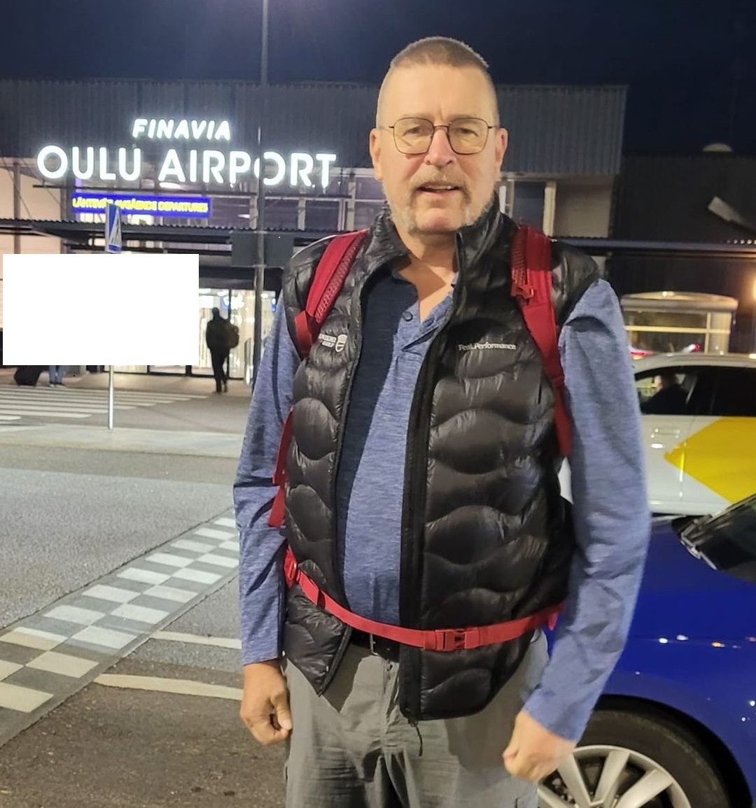

Oulu 5.9.2022
Matka kohti Santiago de Compostelaa alkoi syyskuun 5. päivänä 2022 Oulun lentoasemalta. Kone lähti kohti Pariisia aamukuudelta. Helsingissä oli välilasku. Kaikki matkatavarat reilun kuuden viikon matkaa varten olivat repussa, joka painoi 5 kiloa.